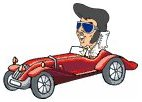
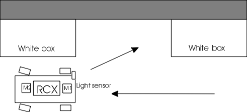
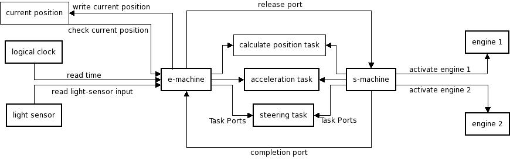

EMBEDDED SOFTWARE ENGINEERING

back into a parking space
Team
Idea
Develop and implement a Lego Mindstorm car, which is parking automatically into a free parking place

Implementation
Car:
The car is equipped with a light sensor and two motors. The first motor is for driving forward or backward the second motor is to direct the car. (it works like a real car)
Environment:
The environment consists of 2 white boxes which delimit the parking space.
Conditions
Action:
The car will be disposed beside the first white box. Then the program will
get started.
While the car is driving forward it will get data from the light
sensor. When the brightness of the environment is changing, the program knows:
this is the beginning of the parking slot.
When the brightness is changing
next, the parking slot will end. From the speed the car drives and the time from
the first to the second box, the program can compute if there is enough place
for parking. (The speed of the car is predefined).
When the parking place is large enough, the parking sequence will be
launched.
parking sequence: The angle of turn as well as the time the car will drive back will depend on the length of
the parking slot. By driving backwards
the program will compute the angle the car reaches from the rounds of two
motors. A predefined angle can not be passed over, as it can not drive the hole
way with the same angle. The angel for driving back has to change after a
specific way (in relation of the whole lenght of the parking slot). When
the computed way for driving back is reached, the car will change the angle of
turn and drive forward a computed time.
The Program:
The control of the car is carried out by the developed EMachine. The program which controls the car consists of E- and S-code.
Task description

acceleration task: The acceleration task controls one motor which executes the forward or backward moving of the car.
steering task: This task controls the second motor which moves the front wheels left or right.
calculate position task: This task is invoked when the acceleration task is executed, and it computes the actual position of the car. The computation consists of the two tasks, acceleration and steering task. The position depends of the angel of the steering wheels and the time the car drives in a direction with this angel. The output is written in the current position environment through the write current position port. The e-machine reads the current position out through the read from environment port.
Programming Language
Java
Operating system on RCX:
leJOS
Tecnical Implementation:
The E- and S-Machine, whereon the code will be executed, are running on a PC. This means all computations are executed on a PC.The car will get the instructions via the infrared sensor. A java program, Rcxdirect, runs on the RCX and receives and executes the instructions from the PC. The Advantage resulting from this method consists of, we have now much more resources for our programm, because we are not bounded to the limited capacity of the lejos and the RCX.